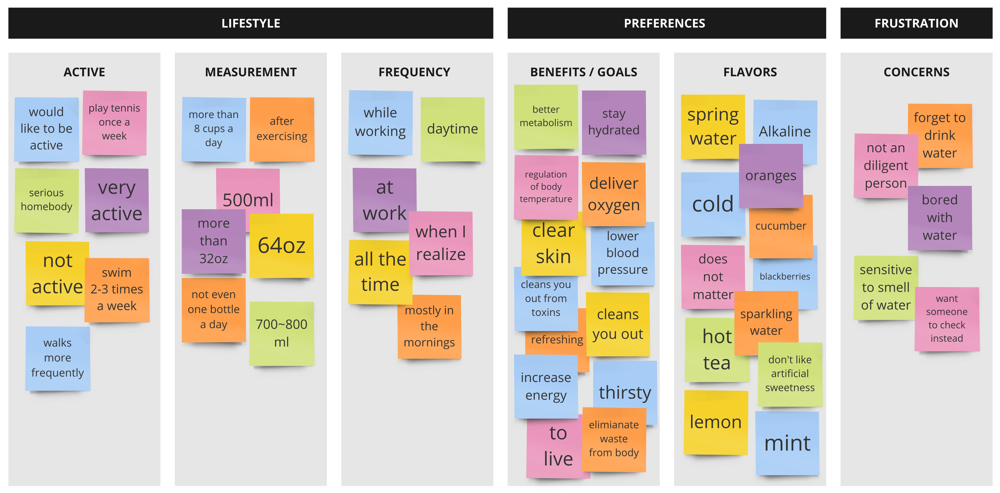
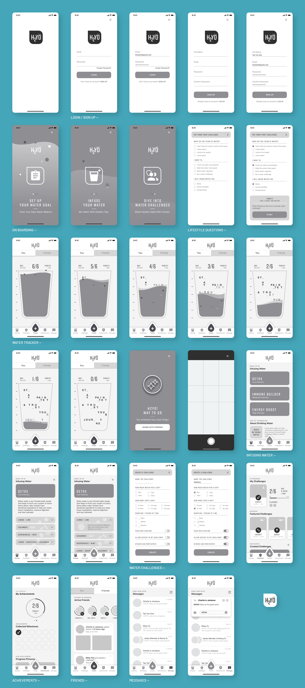
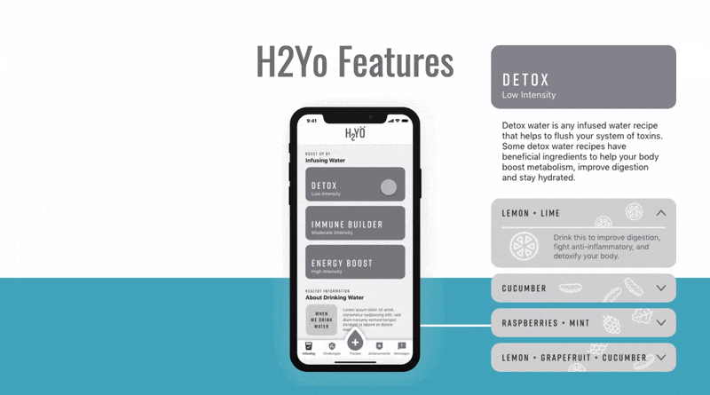
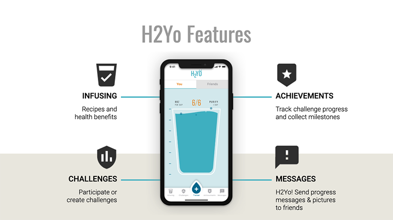
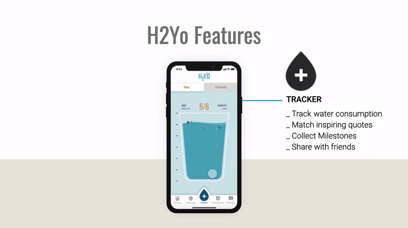

The interview included questions about their lifestyle to see their level of activeness and knowledge on water consumption.
 From the survey we found that people who were active drink water regularly yet inactive people are less likely to consume the recommended health standard amount of 8oz per day. From our research and feedback from interviews and surveys we discovered the key findings:Consistent feedback of users not knowing why they should or how to infuse their water to reach their health goals is what made this feature a priority by having challenges it allows for more positivity and feedback from other users who can relate.
 We conclude with an effective water tracking application that does more than track your daily intake of water. This application encourages, suggests additives and provides a sense of community for other users to enjoy. H2yo has found an effective method to increase water intake for any user.   We were able to include both users with active and inactive lifestyles by adding features such a water infusion recipes and competitions in addition to the tracking.
Future developments: